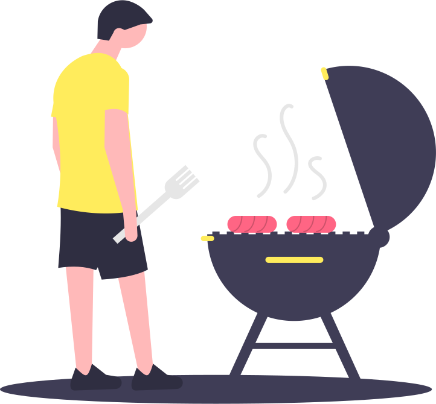

Ingredients
GENERAL
- White Rice2 CUPS
- Cups Pork Skin2 CUPS
- Chorizos4
- Eggs4
- Plantains Baked4
- Lime for Garnish4
- Avocadoes for Garnish4
PAISA BEANS
- Pinto Beans2 CUPS
- Pork Hocks1/2 POUND
- Water4 CUPS
- Carrots (Shredded)1 CUP
- Salt1/2 TEASPOON
- Green Plantain1/2
GUISO
- Onions Chopped1 TABLESPOON
- Tomatoes Diced2 CUPS
- Scallions Chopped1/4 CUP
- Vegetable Oil3 TABLESPOONS
- Salt1/4 TEASPOON
- Clove Garlic Minced1
- Cilantro Chopped1/4 CUP
- Cumin Ground1/4 TEASPOON
HOGAO
- Vegetable Oil3 TABLESPOONS
- Scallions Chopped1 CUP
- Chopped Tomatoes2 CUPS
- Clove Garlic Minced1
- Cumin Ground1 TEASPOON
- Salt1/4 TEASPOON
- Pepper Ground1/4 TEASPOON
POWDERED BEEF
- Flank Steak1 POUND
- Water5 CUPS
- Cloves Garlic Crushed2
- Scallions Chopped2
- Onion Chopped1/2 CUP
- Cumin Ground1/2 TEASPOON
- Salt To Taste1/2 TEASPOON
- Pepper To Taste1/2 TEASPOON

Directions
GENERAL
- Wash your beans and soak overnight in cold water. Drain the beans and place them in a large pot and add water and pork hocks. Over medium-high heat, bring the beans to a boil, then cover the pot and reduce heat to medium-low. Allow the beans to cook until almost tender, approximately 2 hours.
- When the beans are tender, add the guiso, plantains, carrots and salt. Cover and cook for another hour or until beans are fully cooked. (Add additional water as necessary).
- Heat the oil in a saucepan, add the tomatoes, scallions, garlic, ground cumin and cook gently for 10 minutes, stirring until softened.
- Reduce the heat to low, add salt, cook for 10 minutes more, stirring occasionally until the sauce has thickened. Check and adjust the seasoning.
POWDERED BEEF
- Place the flank steak in a plastic bag and add garlic, scallions, onion cumin, salt and pepper. Refrigerate for 2 hours.
- In a medium pot, place the flank steak and water and bring it to a boil over medium-high heat. Reduce heat to medium-low and cook beef for 1 hour or until the beef is cooked.
- Remove beef from water and set aside to let cool. You can save the water used to cook the beef to make soup or just as a beef stock for other dishes.
- Cut beef into chunks and place in a food processor. Process until the beef is of a powdered consistency.
ASSEMBLING THE BANDEJA PAISA
- Prepare the beans, hogao and powdered beef one day ahead and keep in the refrigerator.
- When serving bandeja paisa, heat the beans, white rice, powdered beef and hogao.
- Fry baked plantains in deep frying oil (or enjoy them baked for a healthier option).
- Fry eggs and chorizos.
- To serve, place ingredients as you like, don't forget sliced or diced avocado. Top the beef with the chorizo.
- Serve the hogao on the side.
- Enjoy!